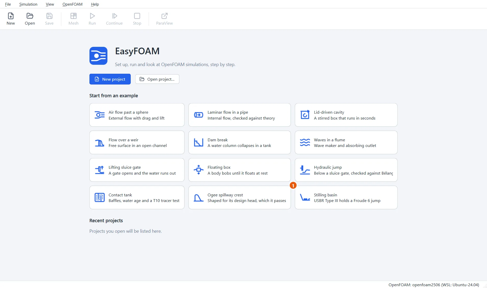
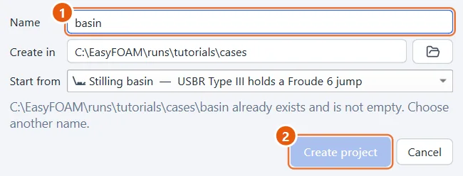
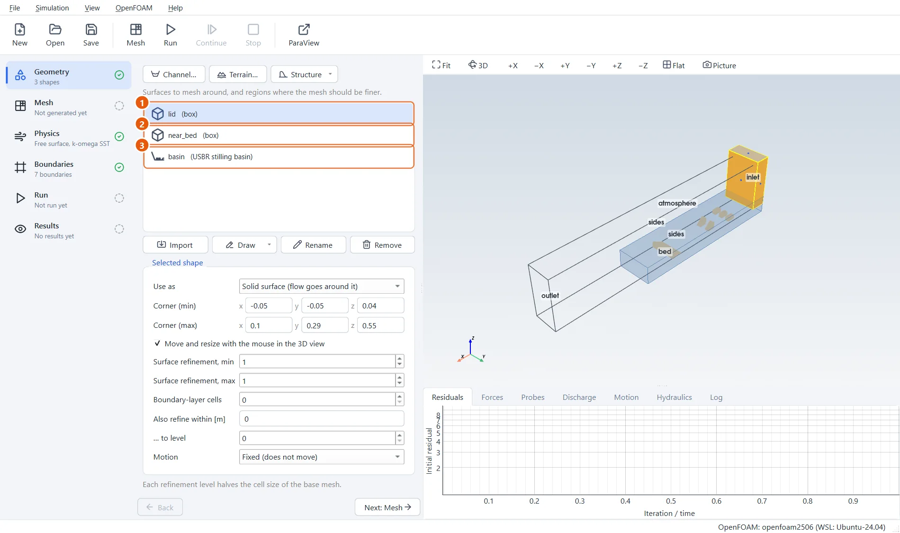
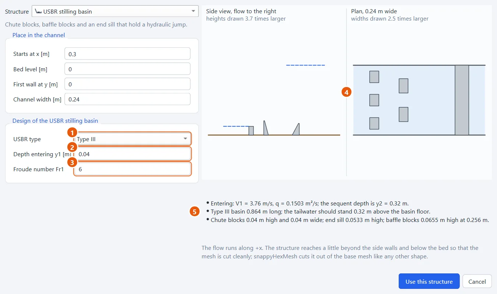
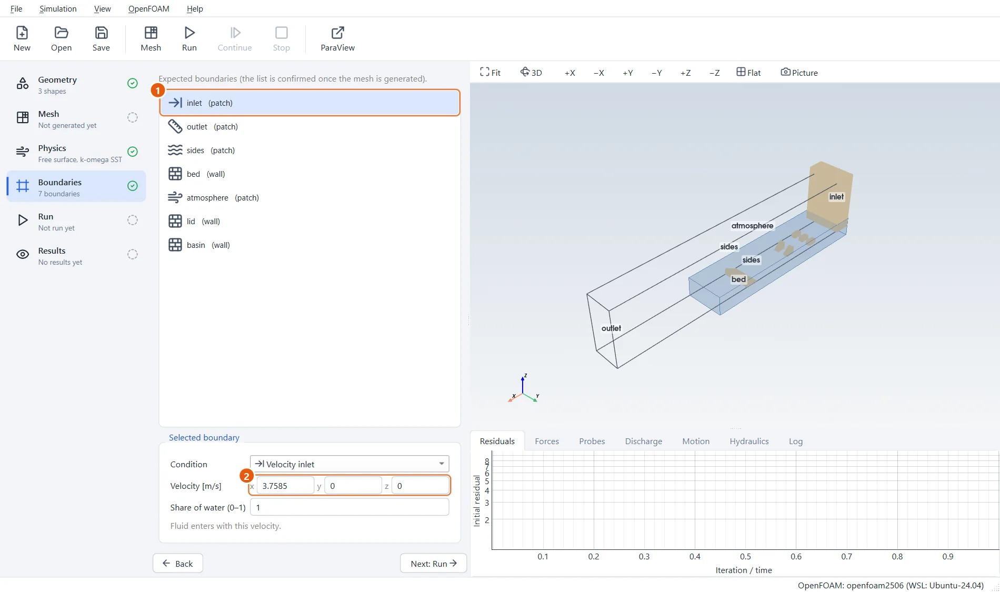
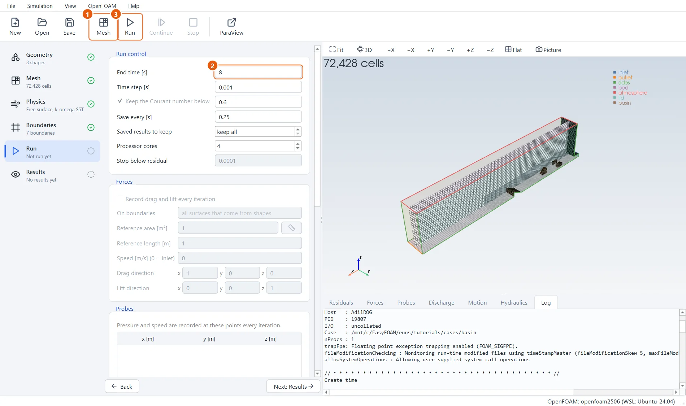
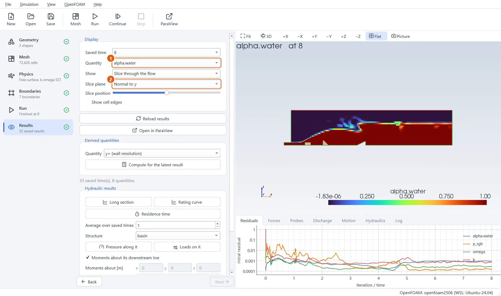
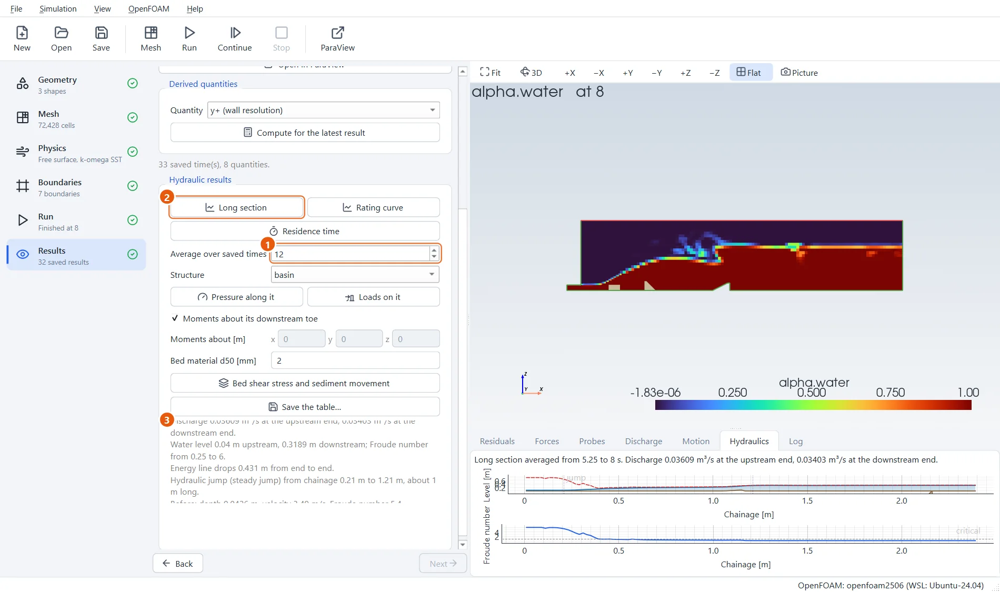

Tutorial 14 of 19
Stilling basin from the flow entering it
Make a USBR Type III stilling basin from the depth and Froude number of the jet entering it, and see it hold the jump within 2.7 sequent depths.
Water leaving a spillway or a gate is fast and shallow. Left to itself it forms a hydraulic jump about six sequent depths long, which moves about as the tailwater changes. A stilling basin holds the jump in place and makes it shorter. The US Bureau of Reclamation's basins (Engineering Monograph 25) are sized from the flow that enters them: Type III, for a Froude number above 4.5 and speeds below about 18 m/s, has a row of chute blocks, a staggered row of baffle blocks and an end sill, and needs only 2.7 sequent depths of length.
In this tutorial you open an example in which a jet 4 cm deep enters at a Froude number of 6, look at the basin EasyFOAM made for it, and run it.
What you will learn
- make a USBR stilling basin from the depth and Froude number of the flow entering it
- read its sequent depth, length and the tailwater it needs
- feed a fast jet in through a slot at the inlet
- see the jump held in the basin on a slice and in a long section
Computer time: about half an hour on four cores.
1Open the example
Start EasyFOAM. This case is one of the examples on the start page: it comes with every setting filled in, and this tutorial walks through each of them so that you understand the case and could build it yourself.
- Click Stilling basin.


2Name the project
The project is an ordinary folder that EasyFOAM creates for you.
- Type a name, for example
basin. - Click Create project.


3A fast jet
The channel is a slice 0.24 m wide of a wide basin, with frictionless sides. The jet comes in through the bottom 4 cm of the inlet: the box lid closes the rest. So the jet needs no tall reservoir and no gate above it. The region near_bed halves the cells along the bed, where the jet and the blocks are.
- lid: a box from 4 cm above the bed upwards, at the inlet.
- near_bed: a region of finer cells.
- basin: the stilling basin, a structure.


4The basin's design
A basin is made from the flow entering it: Type III, a depth of 0.04 m and a Froude number of 6. That makes the jet 3.76 m/s fast, the sequent depth y2 0.32 m and the basin 0.864 m long. Chute blocks as high, wide and far apart as the jet is deep stand at its entrance; baffle blocks 0.066 m high stand 0.8 y2 further on, and an end sill closes the basin.
- USBR type: Type III.
- Depth entering y1:
0.04m. - Froude number Fr1:
6. - The blocks and the sill, from the side and from above.
- Sequent depth, length, tailwater and the size of every block.


5Jet and tailwater
The inlet is a velocity inlet of water at the jet's speed, 3.7585 m/s, through the slot under the lid. The outlet holds the tailwater at the sequent depth, 0.32 m, as a Type III basin needs.
- The boundary inlet.
- Velocity:
3.7585,0,0m/s.


6Mesh and run
Make the mesh and run the eight seconds on four cores.
- Click Mesh in the toolbar (or press F5).
- End time:
8s. - Click Run in the toolbar (or press F6).


7The jump in the basin
Show alpha.water on a slice through the middle of the channel, seen from the side. The jet strikes the chute blocks and the baffle blocks, the jump rolls over them, and the end sill lifts the water to the tailwater depth: the jump is over by the end of the basin.
- Quantity:
alpha.water, the share of water. - Slice plane: Normal to y, a side view.


8The long section
Average the last 12 saved times and press Long section. The jump starts at the chute blocks, and the water is up to 0.9 y2 by the end sill, 2.7 y2 into the basin; a free jump would need about 6 y2, 1.9 m. After the basin the flow is calm, with a Froude number of about 0.27, and the energy lost is what Bélanger gives for the jump.
- Average over:
12saved times. - Press Long section.
- Depth and Froude number along the basin.

